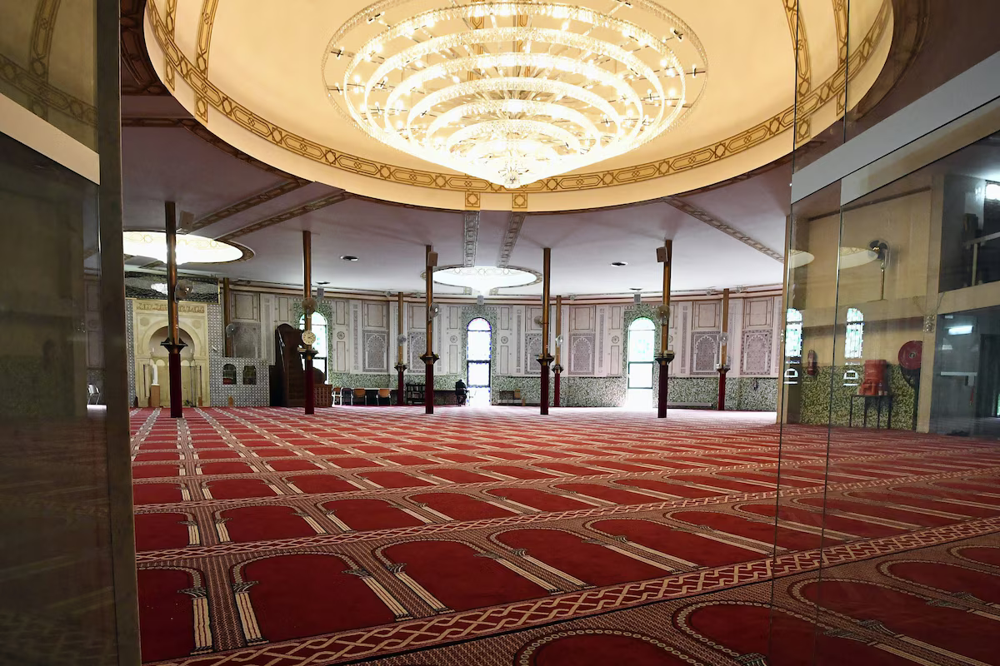

Frise chronologique
De 1880 à aujourd'hui
Un bâtiment unique dont l'histoire reflète les liens profonds entre la Belgique et le monde islamique.
Naissance du Parc du Cinquantenaire
Le parc est fondé à l'occasion du 50e anniversaire de l'indépendance de la Belgique. L'architecte Ernest Van Humbeeck conçoit un pavillon orientalisant en brique, marbre et fer, de forme polygonale à 16 pans.
Le Panorama du Caire
Le comte Louis Cavens rachète la gigantesque toile du peintre Émile Wauters — Le Caire et les bords du Nil — et finance la construction d'une rotonde en forme de mosquée pour l'abriter. La toile mesure 114 mètres de long sur 14 mètres de haut. Elle sera exposée lors de l'Exposition internationale de Bruxelles en 1897.

Le don du Roi Baudouin
Le bâtiment, laissé à l'abandon depuis des décennies, est offert par le Roi Baudouin de Belgique au Roi Faysal d'Arabie saoudite. Un bail emphytéotique de 99 ans est signé le 13 juin 1969, pour transformer le lieu en mosquée et centre islamique au service de la communauté musulmane de Belgique.
Transformation par Mongi Boubaker
L'architecte tunisien Mongi Boubaker réaménage profondément l'édifice, financé par l'Arabie saoudite. La structure rotonde originale est conservée. Trois niveaux sont aménagés : une grande salle de prière au rez-de-chaussée, une bibliothèque islamique, et des bureaux pour le Centre Islamique et Culturel de Belgique. Le bâtiment est classé au patrimoine architectural le 18 novembre 1976.

✦ Naissance de la Grande Mosquée
Inaugurée en présence du Roi Khaled d'Arabie saoudite et du Roi Baudouin de Belgique, la Grande Mosquée de Bruxelles devient la première grande mosquée institutionnelle de Belgique. Elle accueille le siège du Centre Islamique et Culturel de Belgique (CICB), reconnu organe représentatif de l'islam en Belgique.
Une gestion belge et locale
Après quarante années de gestion saoudienne, l'Arabie saoudite remet les clés de la mosquée en avril 2019. La Grande Mosquée entre dans une nouvelle ère, gérée localement, recentrée sur sa mission première : servir la communauté musulmane bruxelloise dans le respect des lois et des valeurs belges.
Rénovation et avenir
Le minaret, fragilisé par les années, fait l'objet de travaux de stabilisation par la Régie des Bâtiments pour un montant de 82 000 €. La mosquée reste un lieu de vie actif — prière, culture et rencontre — pour des milliers de fidèles bruxellois, au cœur du Parc du Cinquantenaire.